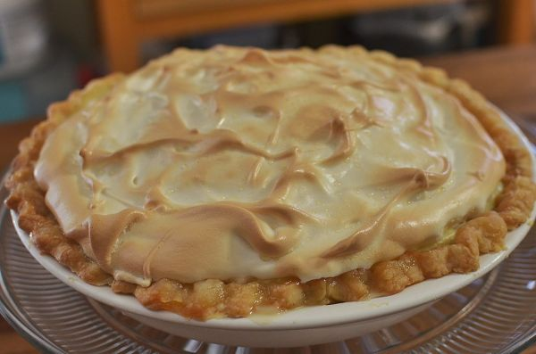

Banana Cream Pie
Poppa kept 2 versions of this dish.
Follow any recipe, mix and match, or use for inspiration for your own version. That's how Poppa did it.
Banana Cream Pie


Photo: jeffreyw (CC BY 2.0)
A 9-inch banana cream pie with a cooked filling of sweetened condensed milk, cornstarch, and egg yolks poured over sliced bananas and chilled, then topped with whipped cream.
Directions
- In heavy saucepan, dissolve cornstarch in water; stir in sweetened condensed milk and egg yolks. Cook and stir until thickened and bubbly. Remove from heat; add margarine and vanilla. Cool slightly. Slice 2 bananas; dip in Realemon and drain. Arrange on bottom of prepared crust. Pour filling over bananas; cover. Chill 4 hours or until set. Spread top with whipped cream. Slice remaining banana; dip in Realemon, drain and garnish top of pie.
- In a heavy saucepan, dissolve the cornstarch in the water; stir in the sweetened condensed milk (not evaporated milk) and the beaten egg yolks.
- Cook and stir until thickened and bubbly. Remove from heat; add the margarine or butter and the vanilla. Cool slightly.
- Slice 2 of the bananas; dip in ReaLemon lemon juice and drain. Arrange on the bottom of the prepared baked pastry shell.
- Pour the filling over the bananas; cover. Chill 4 hours or until set.
- Spread the top with whipped cream. Slice the remaining banana; dip in ReaLemon, drain, and garnish the top of the pie.
Goes well with
Banana Cream Pie · 2

Photo: jeffreyw (CC BY 2.0)
A no-bake banana cream pie with a fluffy filling whipped from heavy cream, half and half, and instant vanilla pudding, layered with sliced bananas in a baked shell.
Directions
- Put whipping cream and half and half in bowl; blend in pudding mix. Whip at lowest speed on mixer. Add ice and continue mixing for 5 minutes. Increase to medium speed and mix another 5 minutes; turn mixer to high speed and mix until very stiff.
- Line bottom of pie crust with slices from 1 banana
- Fill pie shell with about half the prepared filling until level with top, and top with slices of the second banana.
- Pile on the rest of the filling, shaping with spatula to form a high center cone. Refrigerate at least 1 hour until thoroughly chilled. Top with whipped cream and a few slices of bananas for garnish.
- Put the whipping cream and half and half in a bowl; blend in the pudding mix. Whip at the lowest speed on the mixer.
- Add the crushed ice and continue mixing for 5 minutes. Increase to medium speed and mix another 5 minutes; turn the mixer to high speed and mix until very stiff.
- Line the bottom of the baked pie crust with slices from 1 banana.
- Fill the pie shell with about half the prepared filling until level with the top, and top with slices of the second banana.
- Pile on the rest of the filling, shaping with a spatula to form a high center cone. Refrigerate at least 1 hour until thoroughly chilled.
- Top with whipped cream and a few slices of bananas for garnish.
Goes well with
https://lizotte.cool/recipe/banana-cream-pie.html